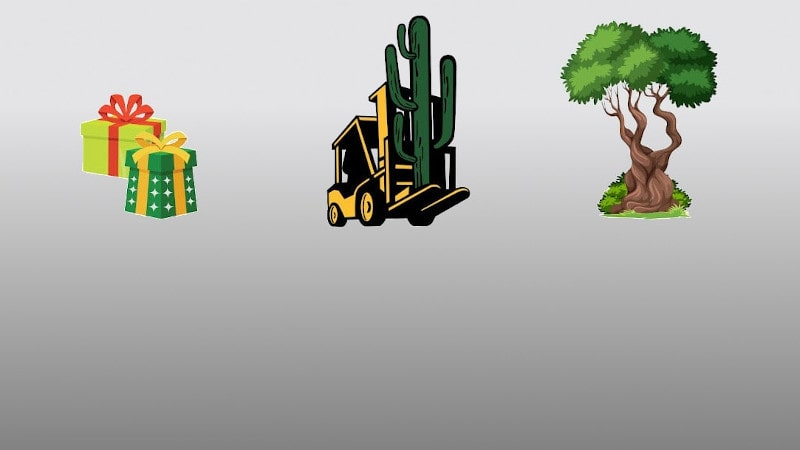

Il tuo giardino in mani esperte
Piacere, sono EnricoDi lavoro curo e valorizzo gli spazi verdi di privati e aziende nelle province di Udine e Gorizia. Che tu abbia bisogno di potare una siepe alta, mettere in sicurezza un albero o rinnovare il prato, intervengo personalmente con competenza tecnica, puntualità e attrezzature moderne.
Perché i clienti della zona si affidano a me:
- Formazione e abilitazioni: Laureato e costantemente aggiornato sulla salute delle piante, opero in regola per lavori in quota, piattaforme aeree e trattamenti fitosanitari.
- Rispetto per te e per i vicini: Nei centri abitati utilizzo attrezzature professionali a batteria, silenziose e senza fumi, e taglio con filo biodegradabile.
- Pulizia impeccabile: A fine lavoro raccolgo e smaltisco ogni residuo vegetale, lasciando il tuo giardino più pulito di come l'ho trovato.
Chiedi un sopralluogo gratuito | Guarda i prezzi indicativi
I miei servizi di giardinaggio
-
{% assign servizi = site.servizi | sort: 'order' %}
{% for servizi in servizi %}
-

Giardiniere a Udine e Gorizia
Lavoro entro 30 km da Palmanova, raggiungendo regolarmente i principali comuni delle province di Udine e Gorizia:
- Provincia di Udine: Udine, Codroipo, Tavagnacco, Cervignano del Friuli, Cividale del Friuli, Pasian di Prato, Campoformido, San Giorgio di Nogaro, Pozzuolo del Friuli, Manzano, San Giovanni al Natisone, Pavia di Udine, Palmanova, Gonars.
- Provincia di Gorizia: Monfalcone, Ronchi dei Legionari, Grado, Staranzano, Cormons, Gradisca d'Isonzo, San Canzian d'Isonzo, Romans d'Isonzo.
Scopri tutti i comuni serviti nelle province di Udine e Gorizia
Le opinioni dei clienti
Il Giardiniere Potasiepe
Via Ialmicco, Palmanova UD 4,7 29 recensioni Google
29 recensioni Google
 **Irma Simona Guarracino**
-
- "Precisissimo, puntuale, veloce, competente! Il lavoro di potatura è stato eseguito benissimo, Enrico ha lasciato il giardino in ordine e ci ha dato tantissimi consigli su come sistemarlo al meglio! Consigliatissimo. Noi sicuramente ci rivolgeremo ancora a lui! Grazie Enrico!"
**Irma Simona Guarracino**
-
- "Precisissimo, puntuale, veloce, competente! Il lavoro di potatura è stato eseguito benissimo, Enrico ha lasciato il giardino in ordine e ci ha dato tantissimi consigli su come sistemarlo al meglio! Consigliatissimo. Noi sicuramente ci rivolgeremo ancora a lui! Grazie Enrico!"
 **Xenia Mosetti**
-
- "Dopo una serie di brutte esperienze, finalmente ho trovato un serio professionista.Ho visitato il suo sito, dove è ben chiaro anche un listino prezzi!!! ho chiamato e sono state ricontattata subito!E’ organizzato e puntuale, ma soprattutto molto preparato, su potature, trattamenti, prodotti.....davvero molto bravo!!!!!"
**Xenia Mosetti**
-
- "Dopo una serie di brutte esperienze, finalmente ho trovato un serio professionista.Ho visitato il suo sito, dove è ben chiaro anche un listino prezzi!!! ho chiamato e sono state ricontattata subito!E’ organizzato e puntuale, ma soprattutto molto preparato, su potature, trattamenti, prodotti.....davvero molto bravo!!!!!"
 **Marco Butelli**
-
- "Persona seria, affidabile e molto scrupolosa nel lavoro. Prezzi più che onesti per il servizio professionale che offre. Lo consiglio vivamente a tutti, basta chiamare e arriva. Top!"
**Marco Butelli**
-
- "Persona seria, affidabile e molto scrupolosa nel lavoro. Prezzi più che onesti per il servizio professionale che offre. Lo consiglio vivamente a tutti, basta chiamare e arriva. Top!"
Visualizza le altre recensioni